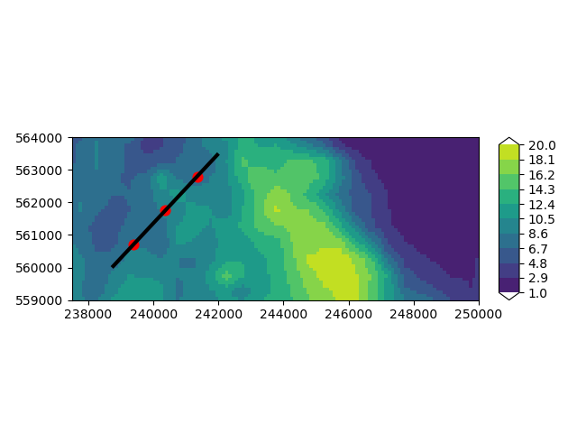
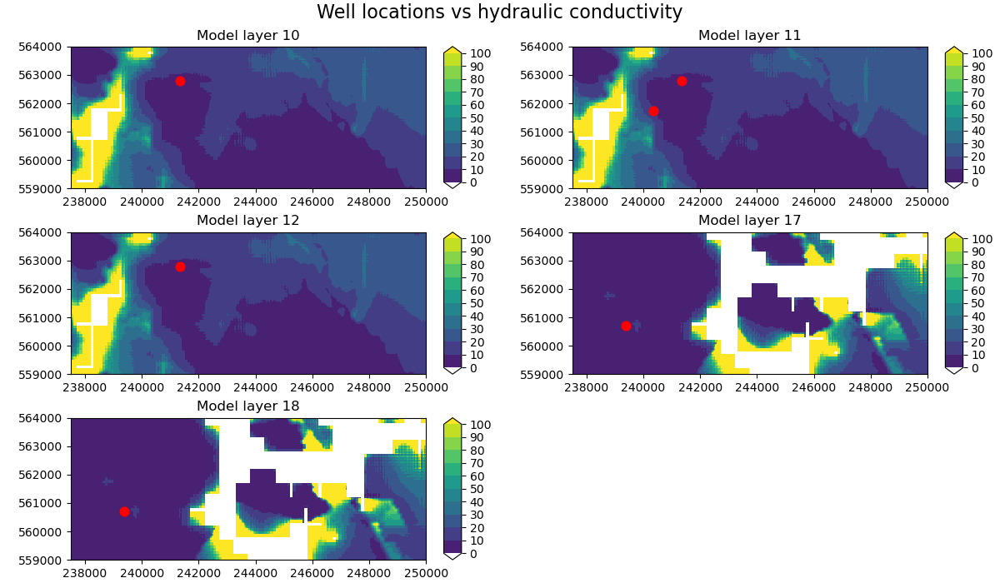
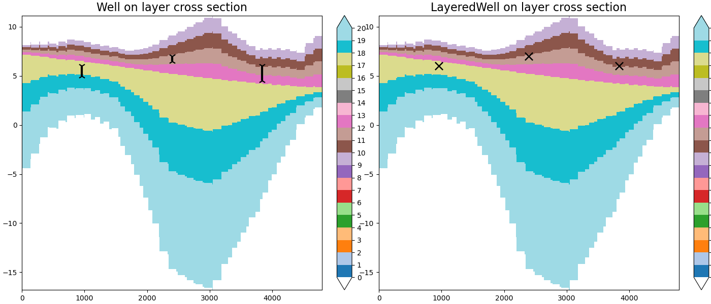

Note
Go to the end to download the full example code.
Assigning Wells to Model Layers#
iMOD Python provides two grid-agnostic well classes:
imod.mf6.Well and imod.mf6.LayeredWell
to build MODFLOW 6 well package input.
Use imod.mf6.Well when the physical top and bottom of a well screen
are known. During conversion, iMOD Python intersects each screen with model
layers and distributes the specified rate over eligible cells in proportion to
transmissivity.
Use imod.mf6.LayeredWell for direct control over well assignment to model layers.
In that case, the supplied layer and rate are kept as provided.
In both cases, wells in inactive cells are removed during conversion to a MODFLOW 6 well package.
Example data#
Let’s load the data first. We have a layer model containing a basic hydrogeological schemitization of our model, so the tops and bottoms of model layers, the hydraulic conductivity (k), and which cells are active (idomain=1) or vertical passthrough (idomain=-1).
import imod
layer_model = imod.data.hondsrug_layermodel_topsystem()
layer_model
Let’s extract the layer model data into separate variables for convenience.
idomain = layer_model["idomain"]
top = layer_model["top"]
bottom = layer_model["bottom"]
k = layer_model["k"]
Let’s define some well locations, and then draw a cross-section line through them.
from shapely.geometry import LineString
x = [239380.0, 240362.5, 241345.0]
y = [560700.0, 561750.0, 562800.0]
rate = [-10.0, -25.0, -15.0]
geometry = LineString([[238725, 560000], [242000, 563500]])
Create a Well object#
Now that we have the model data and well data, we can create a imod.mf6.Well object
and convert it to a MODFLOW 6 well package input.
# Define the top and bottom elevations of the well screen for each well.
screen_top = [6.0, 7.0, 6.0]
screen_bottom = [5.0, 6.5, 4.5]
screen_based = imod.mf6.Well(
x=x,
y=y,
screen_top=screen_top,
screen_bottom=screen_bottom,
rate=rate,
)
screen_based_mf6 = screen_based.to_mf6_pkg(idomain, top, bottom, k)
screen_based_mf6["cellid"]
Let’s plot the top elevation of the model on a map, with the well locations and cross-section overlaid. You can see we have a ridge roughly the centre of the model, sided by two low-lying areas.
import geopandas as gpd
import numpy as np
overlays = [
{"gdf": gpd.GeoDataFrame(geometry=[geometry]), "edgecolor": "black", "linewidth": 3}
]
fig, ax = imod.visualize.plot_map(
layer_model["top"].sel(layer=1), "viridis", np.linspace(1, 20, 11), overlays
)
ax.scatter(screen_based.x, screen_based.y, c="red", s=60, marker="o")

<matplotlib.collections.PathCollection object at 0x000001466996CF50>
We can also visualise the well location per model layer, with respect to the hydraulic conductivity.
from matplotlib import pyplot as plt
cellid = screen_based_mf6["cellid"]
screen_layers = cellid.sel(dim_cellid="layer").values.astype(int)
well_x = cellid["x"].values
well_y = cellid["y"].values
unique_layers = np.unique(screen_layers)
color_levels = np.linspace(float(k.min()), float(k.max()), 11)
fig, axes = plt.subplots(
3,
2,
figsize=(12, 7),
constrained_layout=True,
)
fig.suptitle("Well locations vs hydraulic conductivity", fontsize=16)
axes = axes.ravel()
for ax, layer in zip(axes, unique_layers):
layer_mask = screen_layers == layer
imod.visualize.plot_map(
k.sel(layer=int(layer)),
"viridis",
color_levels,
fig=fig,
ax=ax,
)
ax.scatter(well_x[layer_mask], well_y[layer_mask], c="red", s=60, marker="o")
ax.set_title(f"Model layer {int(layer)}")
for ax in axes[len(unique_layers) :]:
ax.set_visible(False)

Create a Layered Well object#
Now we can follow a similar process to create a imod.mf6.LayeredWell object
and convert it to a MODFLOW 6 well package input. The process is the similar, except we
specify the target model layer for each well.
# Assign the wells to model layers directly, instead of using screen top and bottom elevations.
layer = [6, 7, 6]
layer_based = imod.mf6.LayeredWell(
x=x,
y=y,
layer=layer,
rate=rate,
)
layer_based_mf6 = layer_based.to_mf6_pkg(idomain, top, bottom, k)
layer_based_mf6["cellid"]
To visualise the difference between the two well types, we can plot the wells on a cross-section of the model.
import xarray as xr
from matplotlib import pyplot as plt
from shapely.geometry import Point
# Create a grid containing layer numbers and add top/bottom elevations as coordinates
layer_grid = layer_model.layer * xr.ones_like(layer_model["top"])
layer_grid.coords["top"] = layer_model["top"]
layer_grid.coords["bottom"] = layer_model["bottom"]
# Extract a cross-section along the specified geometry line
xsection_layer_nr = imod.select.cross_section_linestring(layer_grid, geometry)
# Prepare the screen-based well data for visualization
well_df = (
screen_based.dataset[["x", "y", "screen_top", "screen_bottom"]]
.to_dataframe()
.reset_index(drop=True)
)
# Project well locations onto the cross-section line to get their position along the line
well_df["position_along_line"] = [
geometry.project(Point(x, y)) for x, y in zip(well_df["x"], well_df["y"])
]
# Create subplots
fig, axes = plt.subplots(1, 2, figsize=(14, 6), constrained_layout=True)
# Plot the screen-based well data on the first subplot
imod.visualize.cross_section(
xsection_layer_nr, "tab20", np.arange(21), fig=fig, ax=axes[0]
)
for _, row in well_df.iterrows():
axes[0].vlines(
row["position_along_line"],
row["screen_bottom"],
row["screen_top"],
color="black",
linewidth=3,
)
axes[0].scatter(
row["position_along_line"],
row["screen_top"],
color="black",
marker="1",
s=100,
linewidths=1.6,
)
axes[0].scatter(
row["position_along_line"],
row["screen_bottom"],
color="black",
marker="2",
s=100,
linewidths=1.6,
)
axes[0].set_title("Well on layer cross section", fontsize=16)
# Prepare LayeredWell data for visualization
layered_well_df = (
layer_based.dataset[["x", "y", "layer"]].to_dataframe().reset_index(drop=True)
)
layered_well_df["position_along_line"] = [
geometry.project(Point(x, y))
for x, y in zip(layered_well_df["x"], layered_well_df["y"])
]
# Plot the LayeredWell data on the second subplot
imod.visualize.cross_section(
xsection_layer_nr, "tab20", np.arange(21), fig=fig, ax=axes[1]
)
for _, row in layered_well_df.iterrows():
axes[1].scatter(
row["position_along_line"],
row["layer"],
color="black",
marker="x",
s=120,
linewidths=1.8,
)
axes[1].set_title("LayeredWell on layer cross section", fontsize=16)

Text(0.5, 1.0, 'LayeredWell on layer cross section')
Total running time of the script: (0 minutes 6.181 seconds)